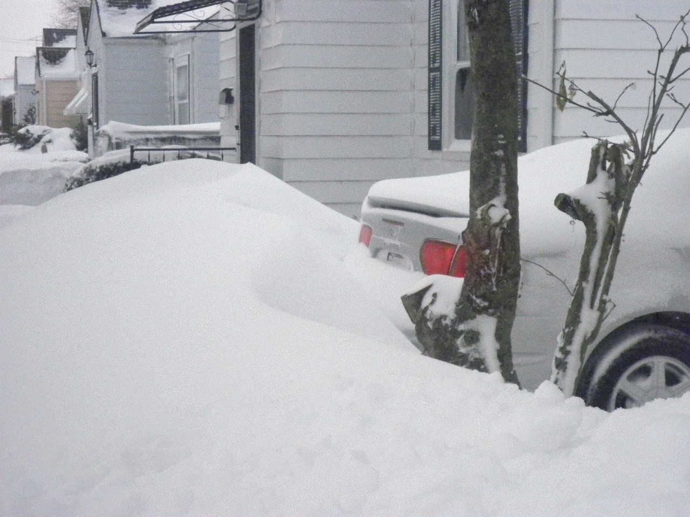

A snowdrift is a deposit of snow sculpted by wind into a mound during a snowstorm. Snowdrifts resemble sand dunes and are formed in a similar manner, namely, by wind moving light snow and depositing it when the wind has virtually stopped, usually against a stationary object. Snow normally crests and slopes off toward the surface on the windward side of a large object. On the leeward side, areas near the object are a bit lower than surrounding areas, but are generally flatter. The impact of snowdrifts on transportation can be more significant than the snowfall itself, such as in the USA during the blizzard of 1978. Snowdrifts are many times found at or on roads, as the crest of the roadbed or the furrows along the road create the disruption to the wind needed to shed its carried snow. Snow fences may be employed on the windward side of the road to intentionally create a drift before the snow-laden wind reaches the road.
